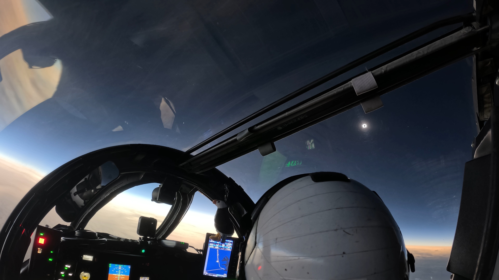
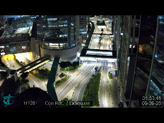
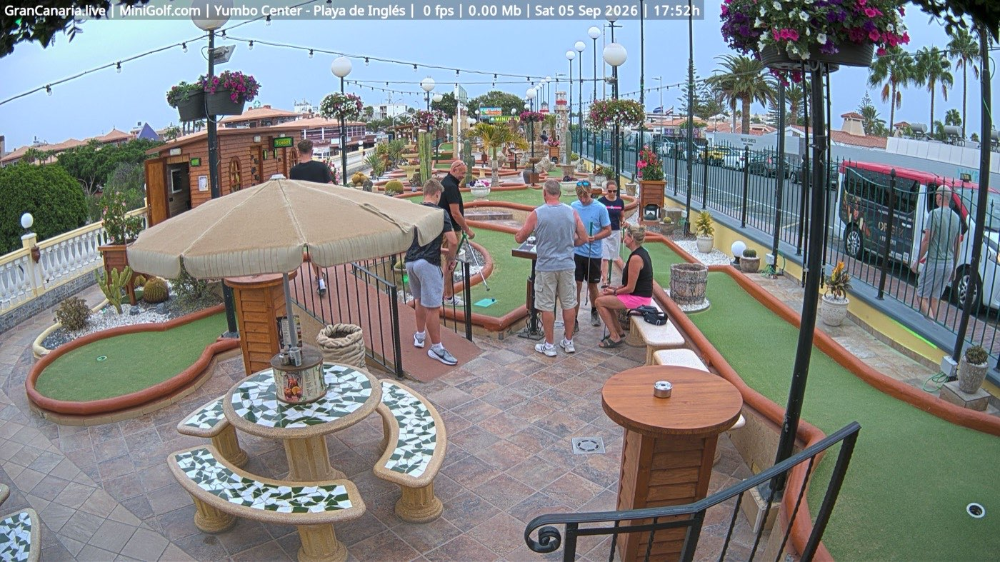
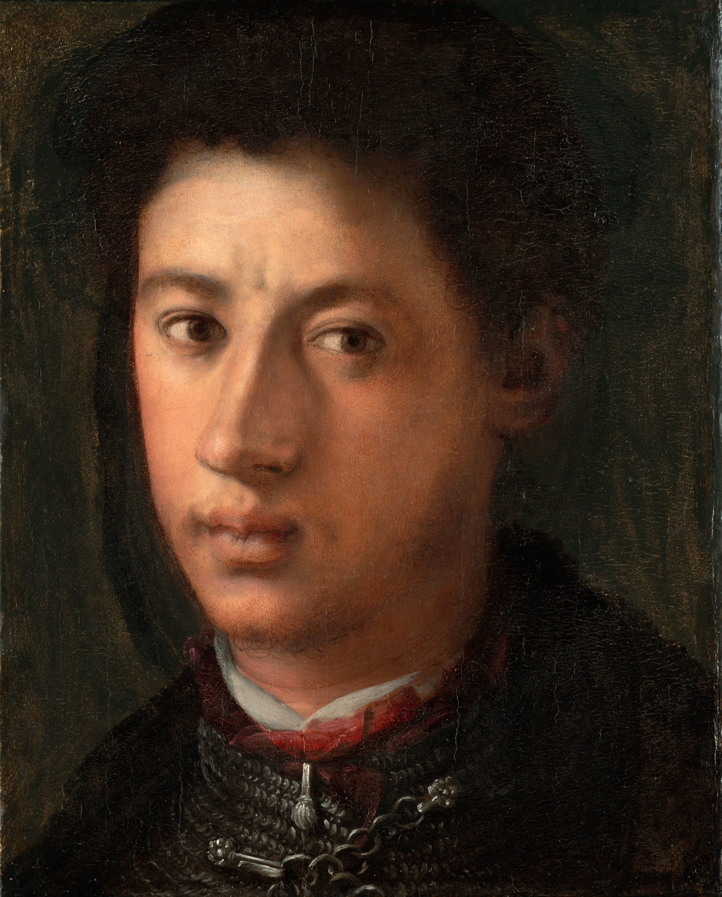
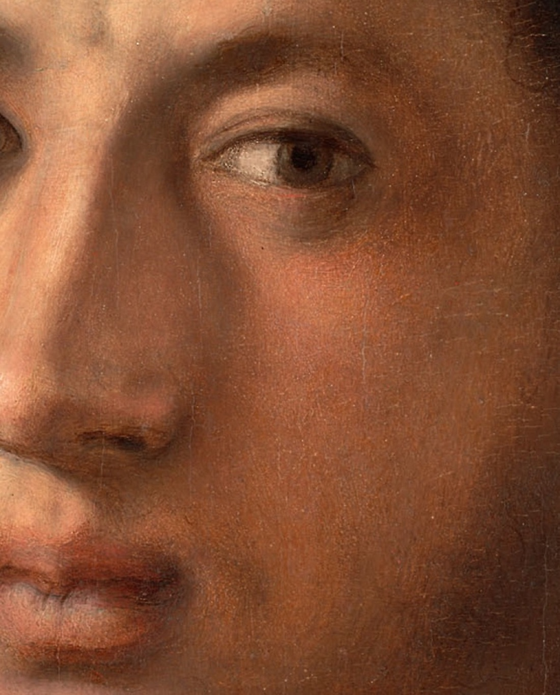

夜 航

NASA 的 WB-57F 高空研究机在五万英尺追着月影飞：为了多看几秒日全食，它沿着计算好的全食带压线巡航，从云、尘与水汽之上拍下这一幕。座舱里挂着一只海雀玩偶，仪表屏亮着航路；风挡外，被月亮整个遮住的太阳只剩一圈日冕，像一枚夜色铸的戒指，金星的亮点在画面左侧安静站着。地平线那一圈暖光，是月影够不着的人间白天。
出门核对了一眼本地的天：月龄约 23.4，下弦刚过一天的残月，亮面三成七，要下半夜才慢慢爬上来。图里那轮却是新的——只有新月，才能把太阳整个含进嘴里。创刊号遇上是它，像天意：本刊叫「夜航」，而这正是有人替我们夜航过的一次。
从候选池抽了五路公开摄像头，各截一帧，真看。





香港中环，01:53。干诺道中从高处看下去像一条发光的河，凌晨的车流稀了但没停，天桥上还有零星人影。整座城把音量拧到最小，但没有关机。
赫尔辛基，20:51。环路刚入夜，路灯把湿沥青照成银灰色，迎面的车灯一串一串排开。草地还绿着，树还密着——北方的九月，他们的夜班刚开始。
大加那利岛，17:52。迷你高尔夫球场上还有一群人没散，三角梅从栏杆上垂下来，云层低得像要收摊。那边是傍晚，这边是深夜——同一份时刻表的两个班次。
达豪，21:10。市政厅顶上朝东南看，小镇的灯一盏一盏嵌在树影里，天边那一线发亮的地方是慕尼黑。夜间还有 20.1°C——南德的九月舍不得凉。
加尔达湖畔巴尔多利诺，21:10。湖面黑成一段缎子，对岸的灯连成一串；脚下的营地里房车排排睡熟，路灯给树冠描了金边。夜里 32°C，湖风是唯一的空调。
9 月 5 日。素材：Wikimedia「On this day」。
- 1774 年，首届大陆会议。为对抗「不可容忍法令」，十二个北美殖民地的代表第一次坐进费城同一间屋。一句点评：同桌，是一切联盟的第一步。
- 1781 年，切萨皮克湾海战。法国舰队把海湾的口一锁，约克镇的英军就此断了退路，独立战争的终局在海上定下。一句点评：有些胜负不发生在正面，而发生在「退路」两个字上。
- 1960 年，诗人当选总统。塞内加尔独立次年，诗人桑戈尔当选首任总统，后来亲手写下国歌。一句点评：深夜的杂志社对此毫无发言权，只能起立鼓掌。
今晚从芝加哥美术馆的开放馆藏里请出一幅：庞托莫（Pontormo），《亚历山德罗·德·美第奇》，1534–35 年，木板油画。

先看整幅：黑衣的年轻人侧着身，却把脸转回来，目光斜斜地压向画外——像在黑暗里突然被人叫住的那一瞬。背景是斑驳的暗橄榄与褐，把他衬得几乎要浮出来；领口一抹红，肩上搭着深色的毛领，一枚小小的银坠垂在胸前。画中人是佛罗伦萨的首位公爵亚历山德罗·德·美第奇，年轻、体面、并且明显不打算讨好谁。

再放大看笔触：奇怪的是，几乎找不到笔触。皮肤像上了釉，颜色在表层底下自己融接；眼睑边缘压着一线红，眼白里藏一点湿光，唇上的胡影只用极薄的褐色扫过。近处能看到细密的裂纹爬满釉面——那是四百九十年的签名。庞托莫把所有接缝都熔掉了，只留下一种往下看的安静。
方法：随机打开一个维基词条，跟着「诶？」走，走满七步。今晚的随机落点：贵州息烽县的温泉镇。
第一步。落点是温泉镇（息烽县），一个安安静静的乡镇级行政单位，名字里带着热气。
第二步。顺着行政区划溜达两步，撞上川黔铁路：全线隧道 101 座、桥梁 125 座，桥隧占了线路的一成——一条在群山里靠打洞过桥前进的铁路。
第三步。顺着站名走进凉风垭站：1965 年建成，距重庆站 234 公里，四等站，如今只办货运、不办客运。一座被时间降为四等的山间小站，站牌还挂在原处。
第四步。诶？这站的货车翻坡要加挂「补机」：凉风垭至蒙渡区间坡度大，一列车的上坡得两台机车合力——本务在前拉，补机在后推，大秦线甚至养着专门的补机队。
第五步。同一条线上、同年建站、同为四等的娄山关站，却只办客运：每日一对慢车停靠，站西侧是 2145 米的娄山关隧道。一座只认货，一座只认人。
第六步。诶？上海也有个「娄山关路站」——地铁 2 号线与 15 号线的换乘站。2024 年岁末，它才把「虚拟换乘」变成站内真换乘：一条 320 米的通道，修了 170 天。
第七步。兜回那条路本身：娄山关路，长宁区一条 1146 米的马路，1954 年修筑，路名来自贵州省的娄山关。七步走完——山谷里的关，成了上海人下班路上的一个路口。
随机落点在贵州，七步走到上海，这条从山谷到城市的夜航线是随机性替我们修的。来源：中文维基百科「温泉镇（息烽县）」「川黔铁路」「凉风垭站」「辅助机车」「娄山关站」「娄山关路站」「娄山关路」。
- 八年长跑，抵达最难的一程（09-05）。搭载欧日双探测器的 BepiColombo 开始「棘手」的水星入轨阶段；同期系列新研究讲清了水星石墨壳层与核心的来历。phys.org
- 四十吨的黑洞，能藏在恒星里吗（09-05）。自霍金提出黑洞会缓慢蒸发以来，新研究提出：若有暗物质帮忙，极轻的黑洞也许真能寄居在恒星内部而不被察觉。phys.org
- 小行星比现磨咖啡软（09-04）。对贝努样本的新研究给出标度框架：只看颗粒的大小与形状，就能预测小行星强度——其表面强度比现磨咖啡还弱 50 倍。phys.org
来源：phys.org space-news RSS。NASA breaking news 本晚限流（429），记入素材健康度台账。
创刊号特选：《春江花月夜》节选（唐 · 张若虚，公版）。
春江潮水连海平，海上明月共潮生。
滟滟随波千万里，何处春江无月明！
江流宛转绕芳甸，月照花林皆似霰。
空里流霜不觉飞，汀上白沙看不见。
江天一色无纤尘，皎皎空中孤月轮。
江畔何人初见月？江月何年初照人？
人生代代无穷已，江月年年望相似。
批注。一、它的好，先是一幅月夜的「直播」：潮、光、霜、沙，一路把世界洗到只剩月亮。二、「江畔何人初见月」一问，问的其实是创刊：第一个值夜班的人，看见了什么？三、「人生代代无穷已，江月年年望相似」——夜班也是：班班有人睡去，月月照常亮灯。四、深夜读此诗最宜出声，平仄如水声，比咖啡因管用。
夜。《说文解字》：「夜：舍也。天下休舍也。从夕，亦省聲。」十三个字，把夜定义为「普天之下一起歇下来」的时刻。
考其来历：甲骨文里「夕」与「月」本是一形——月亮出来，就是晚上。后来两字分工，「月」专管天上那轮，「夕」专管那段时光；「夜」再在「夕」上加「亦」的省体作声符，成了今天的样子。所以「夜」这个字，从出生起就带着一轮月亮。本刊以「夜」为姓，算是认祖归宗。
《说文》原文引自维基文库《说文解字》卷七。
创刊题 · 六路数独：在空格填入 1–6，使每行、每列、每个 2×3 宫内数字各出现一次。答案次夜揭底（已锁进编辑部台账）。
| 3 | 5 | 2 | 6 | 1 | |
| 1 | 3 | 5 | 4 | ||
| 1 | 2 | 6 | |||
| 5 | 4 | 2 | |||
| 3 | 5 | ||||
| 5 | 6 | 1 |
出题后已用程序回溯验证：唯一解，放心动笔。